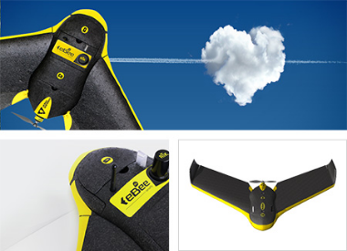
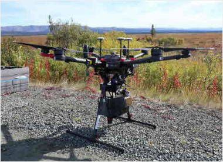
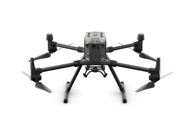
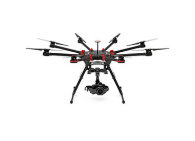
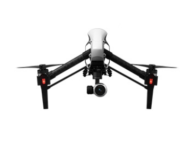

-
STAR소개

-
STAR소식
-
원격탐사
-
극지관측
-
관련사이트
무인기 고해상도 무인 관측을 통해 빙권의 정밀한 특성을 분석합니다.
Sensefly ebee

| 비행시간 | 최대 50분 |
|---|---|
| 센서 | 18.2M RGB카메라 |
| 중량 | 630g |
| 속도 | 36 – 57km/h(10 – 16m/s) |
| 최대풍속저항 | 45 km/h(12 m/s) |
DJI F650

| 비행시간 | 최대 25분 |
|---|---|
| 센서 | 범용 소형 카메라 |
| 중량 | 1200 – 2400g |
| 배터리 | 3S~4S LiPo |
| 최대풍속저항 | - |
DJI s1000

| 비행시간 | 최대 15분 |
|---|---|
| 센서 | 16.1M RGB카메라 |
| 중량 | 4.4kg |
| 배터리 | 22m/s의 (ATTI 모드, 바람이 없을 시) |
| 최대풍속저항 | 10m/s |
DJI inspire1 v2

| 비행시간 | 최대 18분 |
|---|---|
| 센서 | 12.4M RGB카메라 |
| 중량 | 2935g |
| 배터리 | 22m/s의 (ATTI 모드) |
| 최대풍속저항 | 10m/s |
DJI Phantom 4

| 비행시간 | 최대 28분 |
|---|---|
| 센서 | 12.4M RGB카메라 |
| 중량 | 1380g |
| 배터리 | S 모드 – 72 km/h |
| 최대풍속저항 | 10m/s |
| 수직정확도 | 수직 | ±0.1 m (비전 포지셔닝 사용 시) / ±0.5 m (GPS 포지셔닝 사용 시) |
|---|---|---|
| 수평 | 수평 : ±0.3 m (비전 포지셔닝 사용 시) / ±1.5 m (GPS 포지셔닝 사용 시) |